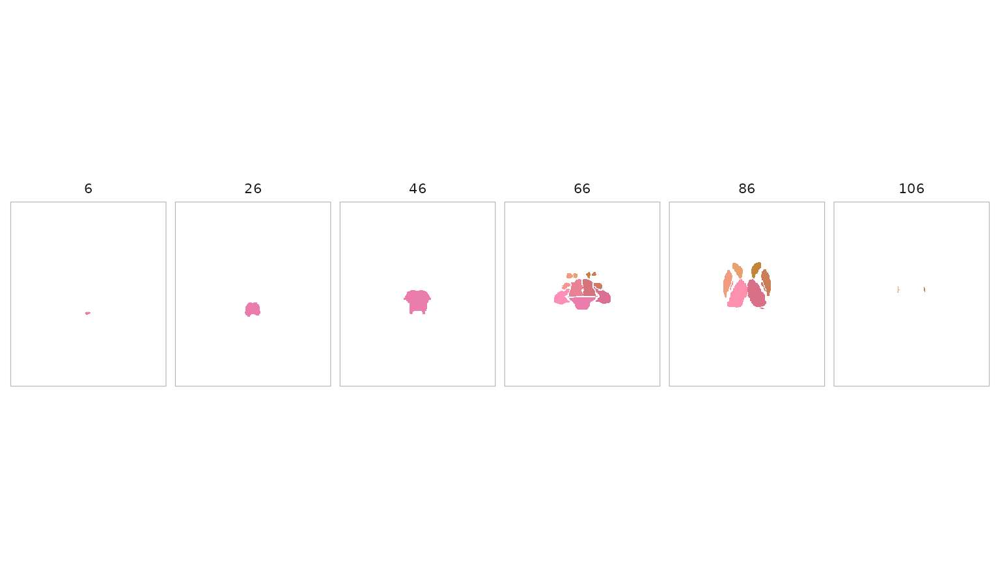

You have a brain image and want to ask a regional question: what value does this image take in each parcel, region, or hemisphere? The difficult part is not computing a mean. It is keeping the atlas labels, spatial grid, metadata, and plotting representation aligned from beginning to end.
This article follows one complete path. You will load the bundled FreeSurfer ASEG atlas, inspect its regions, create a compatible image, reduce that image to one value per region, and draw the atlas. The core path is offline and every result is executed when this vignette is built.
What are the objects?
Three object transitions organise the workflow:
| You have | What it contains | A common next step |
|---|---|---|
an atlas
|
a labelled volume plus one row of metadata per region |
roi_metadata(), get_roi(), or
reduce_atlas()
|
a NeuroVol
|
one numeric value at every voxel on a declared grid | summarise it with a compatible volume atlas |
| a regional tibble | one value per parcel or anatomical region | analyse it or pair it with a matching plot |
A surfatlas is the surface counterpart of an
atlas. It stores a labelled mesh for each hemisphere rather
than a labelled volume. Volume and surface atlases share region IDs and
metadata, but they are not interchangeable containers.
How do you load and inspect an atlas?
get_atlas() is the general discovery-and-loading entry
point. Atlas-specific loaders remain useful when you want their
specialised arguments.
library(neuroatlas)
atlas <- get_atlas("aseg")
atlas
#> ── Atlas Summary ───────────────────────────────────────────
#>
#> ❯ Name: ASEG
#> ❯ Model: FreeSurferASEG [volume]
#> ❯ Space: MNI152NLin6Asym
#> ❯ Source: bundled_extdata
#> ❯ Provenance: 1 artifacts, 1 history steps
#> ❯ Dimensions: 193 x 229 x 193
#> ❯ Regions: 17
#>
#> Structure Distribution:
#> |- Left hemisphere: 7
#> |- Right hemisphere: 8
#> \- Bilateral/Midline: 2
#>
#> ────────────────────────────────────────────────────────────The object contains 17 subcortical and midline regions on an
MNI152NLin6Asym grid. Prefer public accessors over reaching
into the object when an accessor exists:
meta <- roi_metadata(atlas)
meta[c("id", "label", "hemi")]
#> # A tibble: 17 × 3
#> id label hemi
#> <int> <chr> <chr>
#> 1 10 Thalamus left
#> 2 11 Caudate left
#> 3 12 Putamen left
#> 4 13 Pallidum left
#> 5 16 Brainstem NA
#> 6 17 Hippocampus left
#> 7 18 Amygdala left
#> 8 26 Accumbens left
#> 9 28 VentralDC NA
#> 10 49 Thalamus right
#> 11 50 Caudate right
#> 12 51 Putamen right
#> 13 52 Pallidum right
#> 14 53 Hippocampus right
#> 15 54 Amygdala right
#> 16 58 Accumbens right
#> 17 60 VentralDC rightUse list_atlases() to discover the other registered
families without loading them:
list_atlases()[c("id", "label", "representation", "default_space")]
#> # A tibble: 16 × 4
#> id label representation default_space
#> <chr> <chr> <chr> <chr>
#> 1 aseg FreeSurfer ASEG subc… volume MNI152NLin6A…
#> 2 brainnetome Brainnetome 246-regi… volume MNI152
#> 3 glasser Glasser HCP-MMP1.0 (… volume MNI152NLin20…
#> 4 glasser_surf Glasser HCP-MMP1.0 (… surface fsaverage
#> 5 harvard_oxford Harvard-Oxford corti… volume MNI152NLin6A…
#> 6 harvard_oxford_cortical Harvard-Oxford corti… volume MNI152NLin6A…
#> 7 harvard_oxford_subcortical Harvard-Oxford subco… volume MNI152NLin6A…
#> 8 hippocampus Hippocampus (derived… derived MNI152_custom
#> 9 julich_brain Julich-Brain cytoarc… volume MNI152
#> 10 olsen_mtl Olsen MTL atlas volume MNI152_custom
#> 11 schaefer Schaefer2018 cortica… volume MNI152NLin6A…
#> 12 schaefer_surf Schaefer2018 cortica… surface fsaverage6
#> 13 subcortical Subcortical atlases … volume MNI152NLin6A…
#> 14 visfatlas visfAtlas probabilis… volume MNI152
#> 15 visual Early visual cortex … derived MNI152
#> 16 wang Wang 2015 probabilis… surface fsaverageHow do you select regions?
Use filter_atlas() when the selection is naturally
expressed through metadata. Multiple expressions are intersected.
left_atlas <- filter_atlas(atlas, hemi == "left")
roi_metadata(left_atlas)[c("id", "label", "hemi")]
#> # A tibble: 7 × 3
#> id label hemi
#> <int> <chr> <chr>
#> 1 10 Thalamus left
#> 2 11 Caudate left
#> 3 12 Putamen left
#> 4 13 Pallidum left
#> 5 17 Hippocampus left
#> 6 18 Amygdala left
#> 7 26 Accumbens leftThe result is still an atlas, now containing only the seven selected regions. Excluded voxels are unlabelled; region IDs are preserved.
Atlas-level subsetting currently applies to volume atlases. For a
surfatlas, both filter_atlas() and
sub_atlas() fail with a typed unsupported-operation error.
Use get_roi() to extract labelled surface ROIs instead.
get_roi() answers a different question: it extracts the
voxel set belonging to a named region. Labels repeat across hemispheres,
so specify hemi when you need one side.
hippocampus <- get_roi(atlas, label = "Hippocampus", hemi = "left")
hippocampus
#> $Hippocampus
#> <ROIVol> [5990 voxels]
#> Coords : 5990 x 3
#> Range : [17.000, 17.000]The return value is a named list because one query can legitimately
return several ROIs. Here it contains one
neuroim2::ROIVol.
How do you summarise an image by parcel?
The atlas and image must describe the same voxel grid. To make that
contract visible, this example constructs a deterministic left-to-right
gradient in the atlas space. Replace image with a
NeuroVol read from your own analysis once you have checked
its space and dimensions.
atlas_space <- neuroim2::space(atlas$atlas)
atlas_dim <- dim(atlas$atlas)
x_gradient <- array(
rep(seq_len(atlas_dim[1]), atlas_dim[2] * atlas_dim[3]),
dim = atlas_dim
)
x_gradient <- as.numeric(scale(x_gradient))
x_gradient <- array(x_gradient, dim = atlas_dim)
image <- neuroim2::NeuroVol(x_gradient, atlas_space)reduce_atlas() applies a statistic within every labelled
parcel. A 3D image returns a long tibble by default.
parcel_summary <- reduce_atlas(atlas, image, mean)
parcel_summary
#> # A tibble: 17 × 2
#> region value
#> <chr> <dbl>
#> 1 Thalamus -0.216
#> 2 Caudate -0.236
#> 3 Putamen -0.478
#> 4 Pallidum -0.350
#> 5 Brainstem -0.00268
#> 6 Hippocampus -0.468
#> 7 Amygdala -0.420
#> 8 Accumbens -0.137
#> 9 VentralDC -0.175
#> 10 Thalamus 0.215
#> 11 Caudate 0.230
#> 12 Putamen 0.472
#> 13 Pallidum 0.347
#> 14 Hippocampus 0.471
#> 15 Amygdala 0.410
#> 16 Accumbens 0.128
#> 17 VentralDC 0.181The region column uses the atlas’s full region labels.
The values are finite and vary across parcels because the input image
varies in space.
What does map_atlas() return?
map_atlas() pairs one value per region with the atlas’s
labels and hemispheres. It returns a tibble; it does
not mutate the atlas or create a new surface
object.
mapped_values <- map_atlas(atlas, parcel_summary$value)
mapped_values
#> # A tibble: 17 × 4
#> statistic label region hemi
#> <dbl> <chr> <chr> <chr>
#> 1 -0.216 Thalamus Thalamus left
#> 2 -0.236 Caudate Caudate left
#> 3 -0.478 Putamen Putamen left
#> 4 -0.350 Pallidum Pallidum left
#> 5 -0.00268 Brainstem Brainstem NA
#> 6 -0.468 Hippocampus Hippocampus left
#> 7 -0.420 Amygdala Amygdala left
#> 8 -0.137 Accumbens Accumbens left
#> 9 -0.175 VentralDC VentralDC NA
#> 10 0.215 Thalamus Thalamus right
#> 11 0.230 Caudate Caudate right
#> 12 0.472 Putamen Putamen right
#> 13 0.347 Pallidum Pallidum right
#> 14 0.471 Hippocampus Hippocampus right
#> 15 0.410 Amygdala Amygdala right
#> 16 0.128 Accumbens Accumbens right
#> 17 0.181 VentralDC VentralDC rightThis table is useful for reporting or aggregation because it keeps each value beside its label and hemisphere. Here we make the midline group explicit and then compute a hemisphere-level summary:
mapped_values$hemi[is.na(mapped_values$hemi)] <- "midline"
hemisphere_summary <- stats::aggregate(
statistic ~ hemi,
data = mapped_values,
FUN = mean
)
hemisphere_summary
#> hemi statistic
#> 1 left -0.32933258
#> 2 midline -0.08891959
#> 3 right 0.30673587The left/right sign difference is an executable check on the orientation of our synthetic gradient, not a claim about brain organisation.
How do you inspect the atlas spatially?
plot() renders a volume atlas with one discrete colour
per region. Use a montage to see coverage across slices or
view = "ortho" for three intersecting planes.
plot(atlas, nslices = 6)
For a cortical surfatlas, pass one value per region
directly to plot_brain(). The surface articles develop that
separate object flow. Verify region IDs rather than assuming unrelated
volume and surface products align by shape or region count.
When is resampling safe?
Resampling changes a voxel grid. It does not, by itself, establish anatomical correspondence between different templates.
- Within one template space, nearest-neighbour resampling is appropriate for discrete atlas labels when you need a different resolution or grid.
- Between template spaces, use a validated spatial transform. An affine grid reslice is not a substitute for a nonlinear template-to-template warp.
The transform planner makes the distinction explicit:
atlas_transform_plan(
"MNI152NLin6Asym",
"MNI152NLin2009cAsym",
data_type = "voxel"
)
#> <atlas_transform_plan>
#> from_space: MNI152NLin6Asym
#> to_space: MNI152NLin2009cAsym
#> n_steps: 1
#> status: planned
#> confidence: high
#> warnings: Plan includes unimplemented/planned transform step(s).At the time this article was built, that route is recorded as
planned, not available. Do not interpret
outspace = "MNI152NLin2009cAsym" as a certified nonlinear
transformation until the plan reports an available backend.
Where should you go next?
You now have the package’s central path:
atlas + compatible NeuroVol -> regional
tibble -> analysis or volume plot.
Continue with:
-
vignette("atlas-visualization")for volume figures and ROI colours. -
vignette("surface-parcellations")for the surface object model and parcel-level values. -
vignette("surface-panels")for publication-style comparison figures. -
vignette("working-with-templateflow")when you need external template assets and understand their space contract.
The dilation and Wang visual-cortex articles are specialist workflows. They are not prerequisites for ordinary ROI analysis.